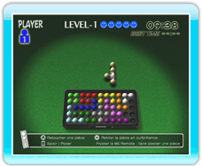
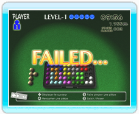
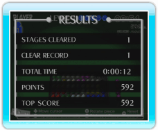
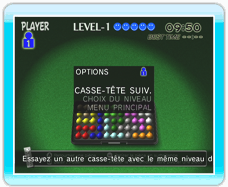

10 |
Mode un joueur |
 |
Ce mode vous permet de compléter des casse-tête en solo. Choisissez entre deux variantes:
NORMAL (normal) et CONTINUOUS (continu).

En mode normal, vous devez compléter les casse-tête le plus rapidement possible.  ● Écran de résultats Cet écran s’affiche lorsque vous complétez un casse-tête.

En mode continu, vous devez compléter autant de casse-tête à la suite que possible. Si vous placez une pièce sur le plateau, vous n’avez plus la possibilité de la déplacer. Essayez donc de ne commettre aucune erreur ou vous perdrez la partie. 
● Écran de résultats Cet écran apparaît à la fin de la partie.

Un menu (voir ci-contre) apparaît après chaque casse-tête en mode normal, et dès que la partie se termine en mode continu.
|
 |
 |
 |